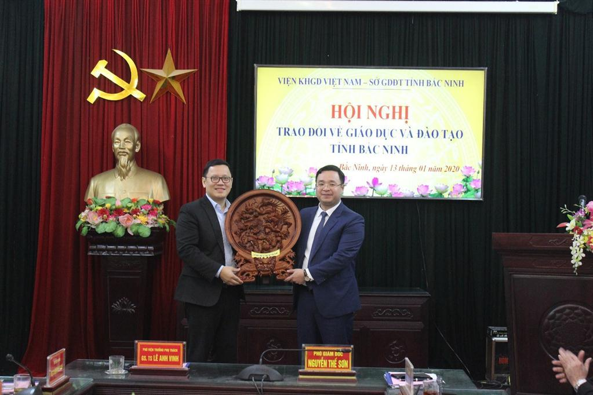
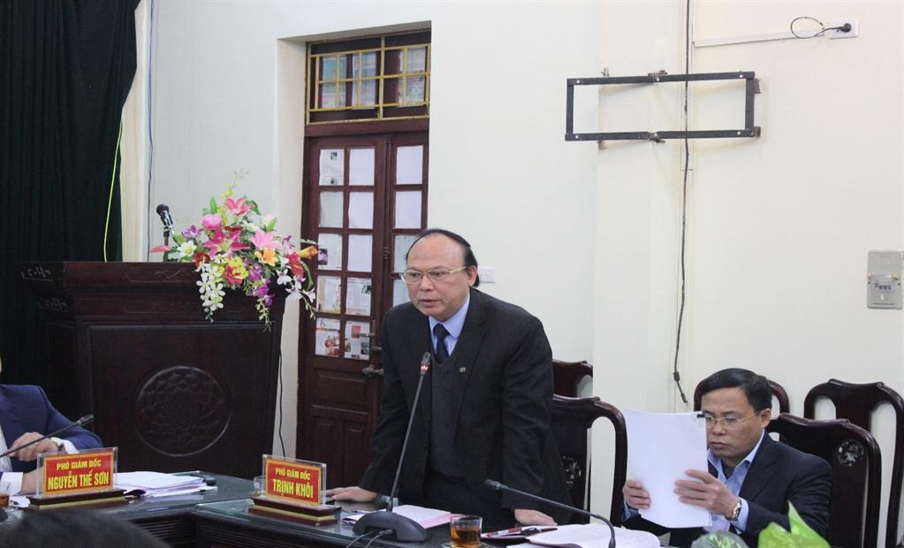
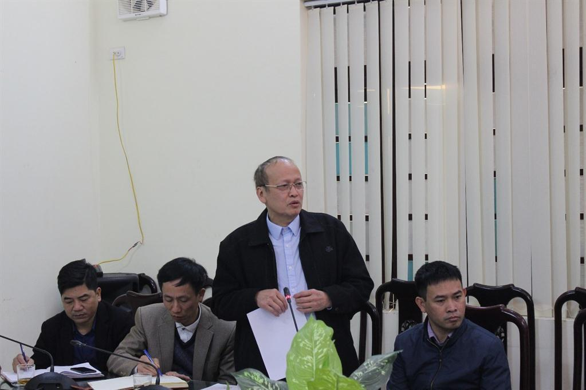

Hội nghị trao đổi về giáo dục và đào tạo tỉnh Bắc Ninh
Chiều ngày 13/01/2021, tại cơ quan Sở Giáo dục và Đào tạo (GDĐT) Bắc Ninh, Sở GDĐT có buổi trao đổi với Viện Khoa học Giáo dục Việt Nam về tình hình và định hướng giáo dục và đào tạo Bắc Ninh.
Tham dự buổi làm việc, về phía Sở Giáo dục và Đào tạo (GDĐT) Bắc Ninh có đồng chí Nguyễn Thế Sơn - Phó Giám đốc phụ trách Sở, đồng chí Trịnh Khôi- Phó Giám đốc Sở, Lãnh đạo các Phòng thuộc Sở, Ban Giám hiệu trường THPT chuyên Bắc Ninh. Về phía Viện Khoa học Giáo dục Việt Nam có GS.TS. Lê Anh Vinh – Phó Viện trưởng phụ trách Viện, PGS.TS. Nguyễn Đức Minh – Phó Viện trưởng, PGS.TS. Trần Huy Hoàng – Phó Viện trưởng và các thành viên trong đoàn công tác.
Phó Giám đốc phụ trách Sở Giáo dục và Đào tạo Nguyễn Thế Sơn phát biểu tại Hội nghị
Thay mặt lãnh đạo Sở GDĐT, đồng chí Nguyễn Thế Sơn – Phó giám đốc phụ trách Sở báo cáo những kết quả đạt được của giáo dục và đào tạo Bắc Ninh về quy mô, mạng lưới trường lớp học; chất lượng đội ngũ cán bộ quản lý và giáo viên; chất lượng giáo dục mũi nhọn và đại trà; công tác xây dựng trường chuẩn quốc gia,…trong những năm vừa qua. Bên cạnh đó cũng chỉ ra một số khó khăn, hạn chế như: đội ngũ giáo viên các cấp còn thiếu; chất lượng giáo dục mũi nhọn còn hạn chế nhất định; công tác giáo dục hòa nhập cho trẻ khuyết tật cần được quan tâm hơn,…
Từ thực trạng giáo dục và đào tạo Bắc Ninh, cũng như mục tiêu đặt ra trong thời gian tới, các đại biểu đã tập trung thảo luận những nội dung: Đánh giá GDĐT Bắc Ninh giai đoạn 2011-2020, định hướng giai đoạn 2021-2030; Nghiên cứu xây dựng cơ sở dữ liệu trẻ khuyết tật; tập huấn bồi dưỡng đội ngũ giáo viên và cán bộ quản lý giáo dục các cấp về việc thực hiện giáo dục hòa nhập; thực hiện chương trình giáo dục phổ thông 2018; phát triển chương trình nhà trường; xây dựng tài liệu giáo dục dạy bơi tự chọn trong trường học; Hợp tác quốc tế; Công tác giáo dục mũi nhọn nhằm phát hiện và bồi dưỡng học sinh năng khiếu cấp THCS và THPT.
Trao đổi với các ý kiến phát biểu và đề xuất trên, GS.TS. Lê Anh Vinh đánh giá cao những thành quả giáo dục tỉnh Bắc Ninh đạt được và khẳng định Viện Khoa học Giáo dục Việt Nam sẽ sẵn sàng tư vấn, hỗ trợ và phối hợp triển khai để cụ thể hóa các đề xuất của Sở GDĐT Bắc Ninh. GS.TS. Lê Anh Vinh phân tích các nhóm công việc sẽ được tiến hành từ đánh giá, phân tích tổng thể của ngành; nghiên cứu xây dựng trường chuyên biệt của tỉnh; đến các hoạt động như xây dựng tài liệu giáo dục thể chất; tập huấn bồi dưỡng giáo viên; các chương trình phát hiện bồi dưỡng học sinh năng khiếu…
Phát biểu kết luận hội nghị, đồng chí Nguyễn Thế Sơn – Phó giám đốc phụ trách Sở cảm ơn sự quan tâm, phối hợp của Viện khoa học Giáo dục Việt Nam, đồng thời thống nhất giao các phòng liên quan hai đơn vị nghiên cứu một số nội dung phù hợp, đề xuất phối hợp triển khai thực hiện, nội dung trọng tâm gồm:
1. Kế hoạch đánh giá tình hình giáo dục và đào tạo tỉnh Bắc Ninh giai đoạn 2011-2020 và định hướng phát triển giai đoạn 2021-2030.
2. Công tác bồi dưỡng đội ngũ cán bộ quản lý, giáo viên và nhân viên, thực hiện tư vấn tâm lý học đường, giáo dục hòa nhập; xây dựng tài liệu dạy bơi trong các nhà trường.
3. Đánh giá, khảo sát mô hình giáo dục chuyên biệt, nghiên cứu xây dựng cơ sở dữ liệu về giáo dục chuyên biệt, bồi dưỡng giáo viên về giáo dục chuyên biệt, đề xuất xây dựng mô hình giáo dục chuyên biệt phù hợp.
4. Thúc đẩy các hoat động về hội nhập quốc tế trong giáo dục như nghiên cứu mô hình song bằng ở trường phổ thông, tư vấn đầu tư, hợp tác có yếu tố nước ngoài trong lĩnh vực giáo dục và đào tạo.
5. Hỗ trợ công tác bồi dưỡng học sinh năng khiếu, xây dựng mô hình sinh hoạt chuyên môn cho giáo viên và phong trào học toán cho học sinh từ cấp THCS để phát hiện và bồi dưỡng học sinh năng khiếu.
Một số hình ảnh tại Hội nghị:

Lãnh đạo hai đơn vị tặng quà lưu niệm
GS.TS. Lê Anh Vinh – Phó Viện trưởng phụ trách Viện phát biểu tại hội nghị

Phó Giám đốc Sở Giáo dục và Đào tạo tỉnh Bắc Ninh Trịnh Khôi trao đổi tại Hội nghị

Hiệu trưởng trường THPT Chuyên Bắc Ninh trao đổi tại Hội nghị